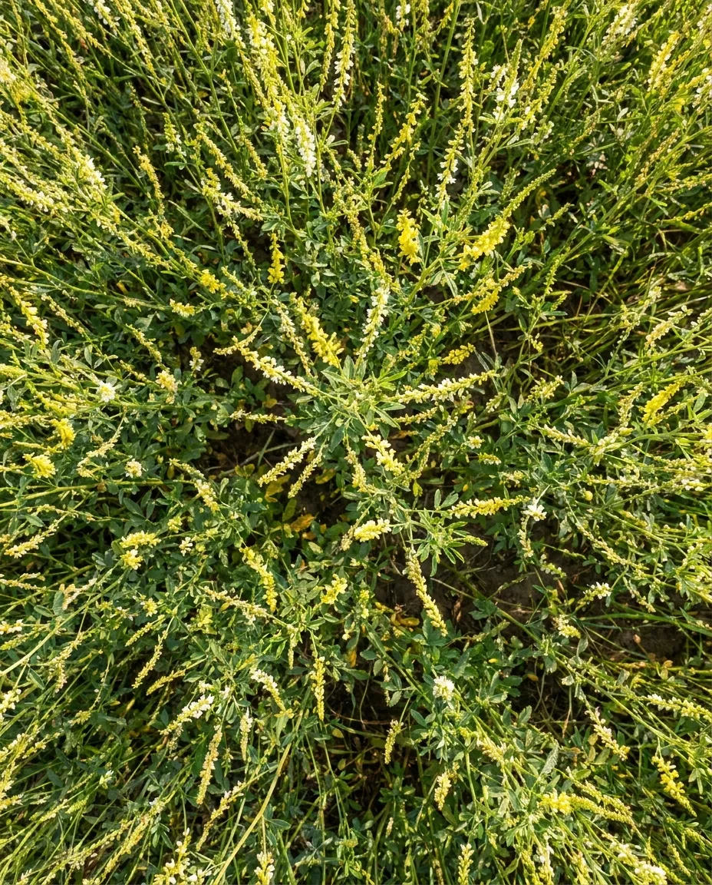

ДОННИК
Донник — ценная медоносная и сидеральная культура, занимающая важное место в современном кормопроизводстве и агроэкологии. Наша селекционная программа направлена на создание сортов донника с высокой нектарной продуктивностью, обеспечивающих стабильный взяток для пчёл даже в засушливых условиях.
Донник — один из лучших сидератов: его мощная корневая система разрыхляет почву на глубину до 1,5 метров, а зелёная масса, запаханная в грунт, обогащает его органикой, азотом и доступным фосфором. Растение также эффективно подавляет рост сорняков, оздоравливает почву от фитопатогенов и снижает засоление.
Благодаря неприхотливости и засухоустойчивости донник можно выращивать в различных почвенно-климатических зонах, получая высококачественное сено, силос и ценный медоносный ресурс.


Направления селекции
- Высокая нектарная продуктивность и длительное цветение
- Быстрый набор зелёной массы и кормовой ценности
- Устойчивость к засухе и неблагоприятным почвенным условиям
- Адаптация к различным срокам посева: озимая и яровая формы
- Повышение эффективности как сидеральной и фитомелиоративной культуры
- Засухоустойчивость
- Скороспелость